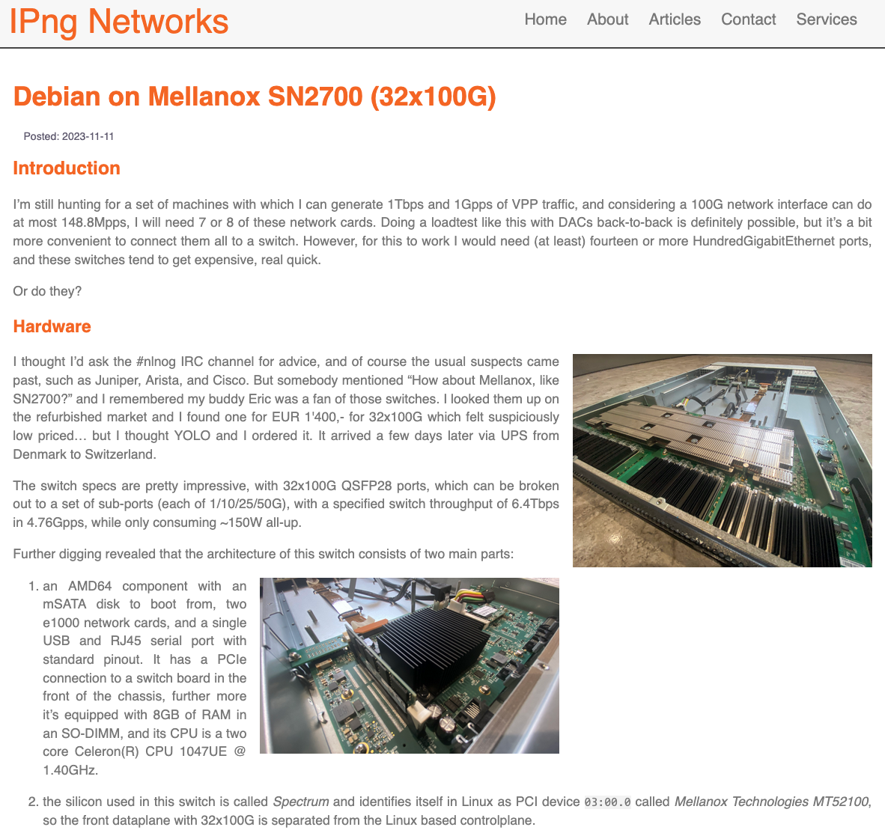
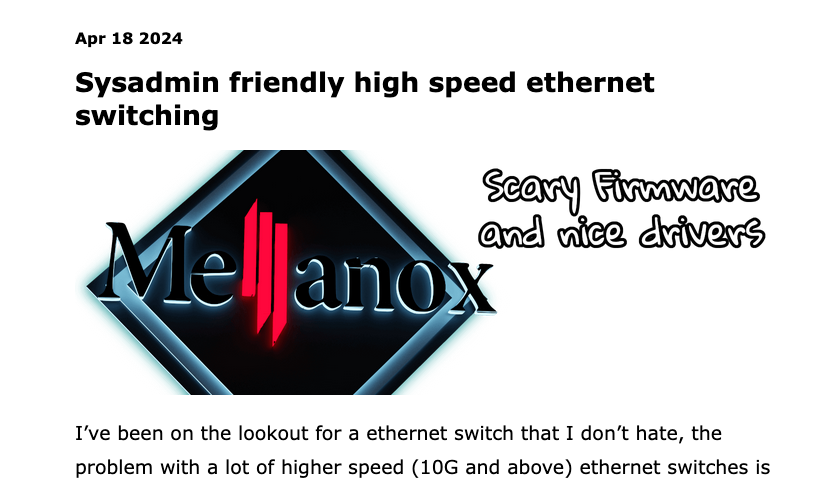
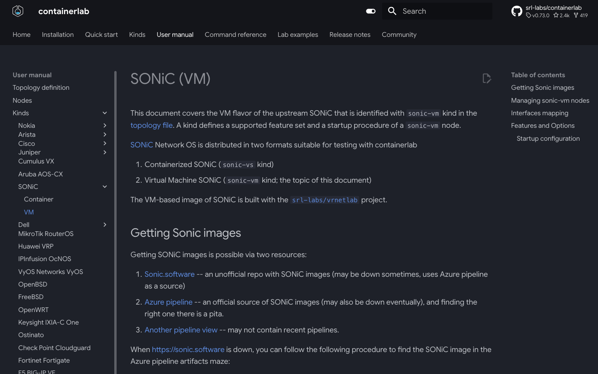
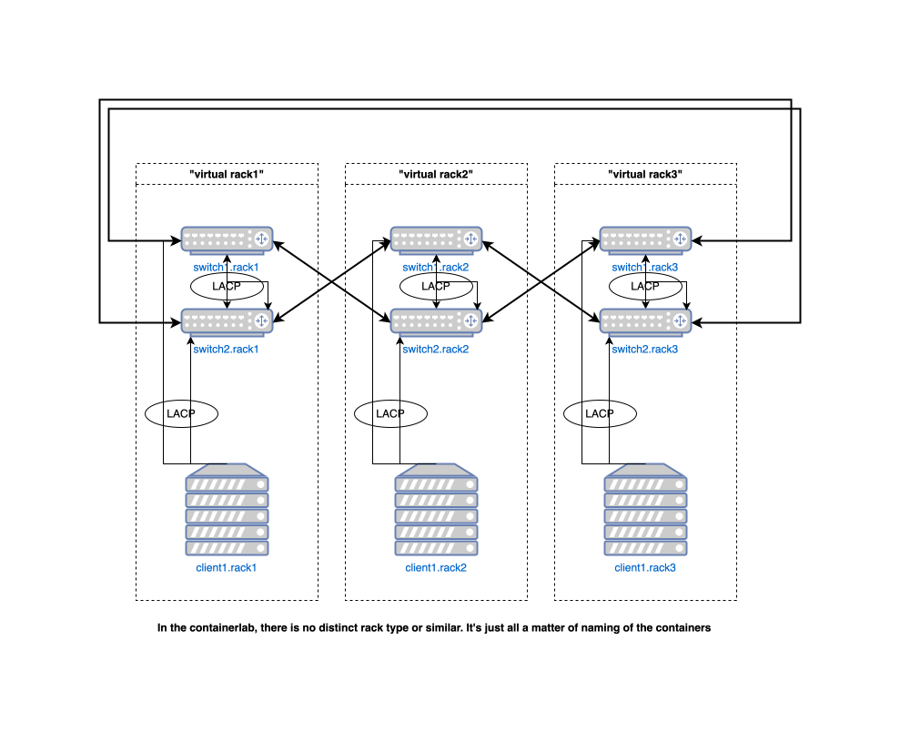
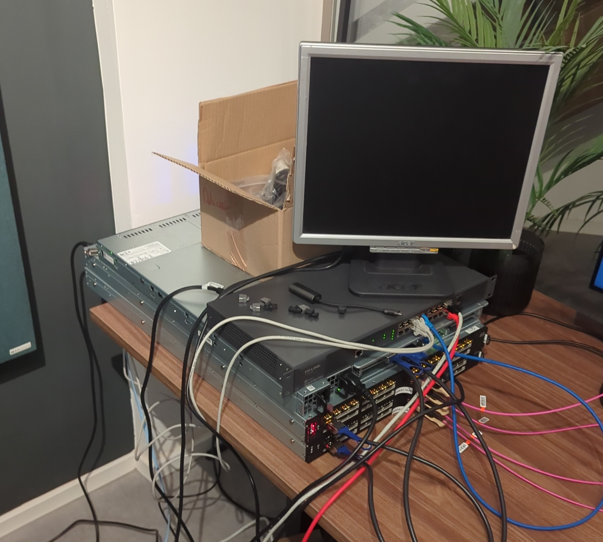
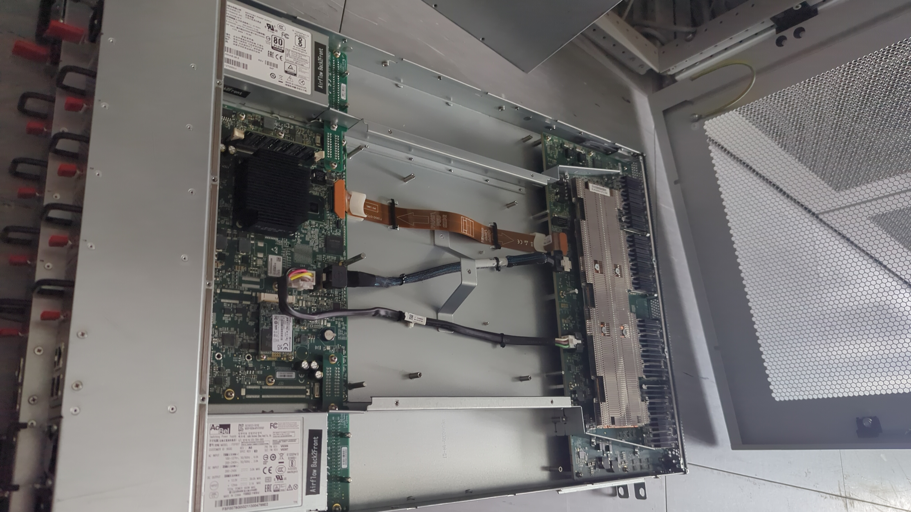
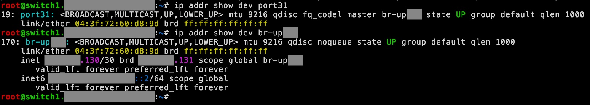
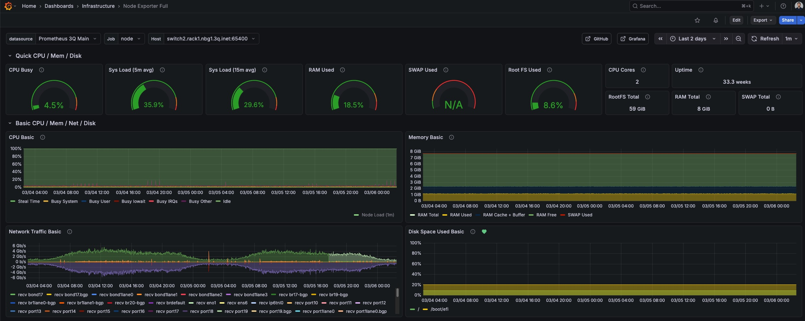

Benedikt Heine, 3Q GmbH
Slides: github.com/bebehei/slides4talks



$> sudo containerlab deploy
# sonic.clab.yml
name: sonic
topology:
nodes:
sonic:
kind: sonic-vm
image: vrnetlab/sonic_sonic-vs:202405
#startup-config: ./config.json
$> ssh clab-<tab>
admin@sonic:~$ show version
SONiC Software Version: SONiC.202405.1048823-bf9c54375
SONiC OS Version: 12
Distribution: Debian 12.13
Kernel: 6.1.0-29-2-amd64
[...]
admin@sonic:~$ sudo config vlan add 100
admin@sonic:~$ show vlan brief
+-----------+--------------+---------+----------------+-------------+-----------------------+
| VLAN ID | IP Address | Ports | Port Tagging | Proxy ARP | DHCP Helper Address |
+===========+==============+=========+================+=============+=======================+
| 100 | | | | disabled | |
+-----------+--------------+---------+----------------+-------------+-----------------------+
admin@sonic:~$ sudo config save -y
/etc/sonic/config_db.json
{
[...]
"VLAN": {
"Vlan100": {
"vlanid": "100"
}
}
}
/etc/sonic/config_db.json
{
[...]
"VLAN": {
"Vlan100": {
"vlanid": "100"
},
"uplink": {
"vlanid": "1000"
}
}
}
admin@sonic:~$ sudo config reload -y
Acquired lock on /etc/sonic/reload.lock
Disabling container and routeCheck monitoring ...
Stopping SONiC target ...
Running command: /usr/local/bin/sonic-cfggen -j /etc/sonic/init_cfg.json -j /etc/sonic/config_db.json --write-to-db
Running command: /usr/local/bin/db_migrator.py -o migrate
Running command: /usr/local/bin/sonic-cfggen -d -y /etc/sonic/sonic_version.yml -t /usr/share/sonic/templates/sonic-environment.j2,/etc/sonic/sonic-environment
Restarting SONiC target ...
Enabling container and routeCheck monitoring ...
Reloading Monit configuration ...
Reinitializing monit daemon
Released lock on /etc/sonic/reload.lock
admin@sonic:~$ show vlan brief
Traceback (most recent call last):
File "/usr/local/bin/show", line 8, in
sys.exit(cli())
^^^^^
[ ... ]
File "/usr/local/lib/python3.11/dist-packages/show/vlan.py", line 15, in get_vlan_id
vlan_prefix, vid = vlan.split('Vlan')
^^^^^^^^^^^^^^^^
ValueError: not enough values to unpack (expected 2, got 1)

Tests mit Containerlab
Alternativ: Nerdspielzeug finanziert von der Firma!


CONFIG_NET_SWITCHDEV=y kompilierenmlxfwWir haben also:
aber auch keine Firmware-Updates vom ASIC.
Offene Frage: Ist das ein Problem?
Beispiel: Interface hinzufügen
$> ip link set dev port31 down
$> ip link set dev port31 mtu9216
$> ip link add br-upXXX type bridge
$> ip link set dev port31 master br-upXXX
$> ip link set dev port31 up
$> ip link set dev br-upXXX up
$> ip addr add dev br-upXXX X.X.X.130/30
$> ip addr add dev br-upXXX X:X:X::2/64

# /etc/netplan/port31.yaml
network:
version: 2
ethernets:
port31:
set-name: port31
mtu: 9216
link-local: []
match:
driver: mlxsw_spectrum
macaddress: &lladdr_port31 04:3f:72:XX:XX:XX
bridges:
br-upXXX:
macaddress: *lladdr_port31
link-local: []
interfaces:
- port31
addresses:
- XXXXXX.130/30
- XXXXXXX::2/64
Oh, das war netplan?
netplan apply funktioniertnetplan try nichtnetplan ist ungeeignet für switchesnetplan apply löscht erstmal alle Routen$> sudo apt install -y bird2
Alternativ: Routing-Protokoll eures Vertrauens
devlink port zeigt portinfosdevlink resource zeigt TCAM
-j macht JSON output!Infrastructure as Code ruft an!
Gibt's ein Tool, das das kann? Nein.
Können wir eines schreiben? Ja!
Wollen wir eines schreiben? Zu Faul!
8 Chat-Nachrichten später:
{
"ports": {
"port27": {
"results": [
"port27lane0",
"port27lane1",
"port27lane2",
"port27lane3"
],
"split": 4
},
}
}
$> apt install -y Freiheit
(Schamlos hier vom Debian-Stand kopiert.)
$> apt install -y prometheus-node-exporter

$> apt install -y salt-minion
... und alles ist eine Datei!
$> apt update && apt dist-upgrade
... wie oft musst du deinen Router rebooten, weil rpd ein CVE hat?
Willst du mit mir zusammen Pakete um die Welt schicken?
Linux Engineer gesucht!
Linux, DevOps, Kubernetes, Ceph (und so viel Basteln wie du willst!)
https://3q.video/de/unternehmen/jobs
Talk to me!